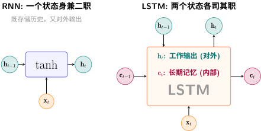
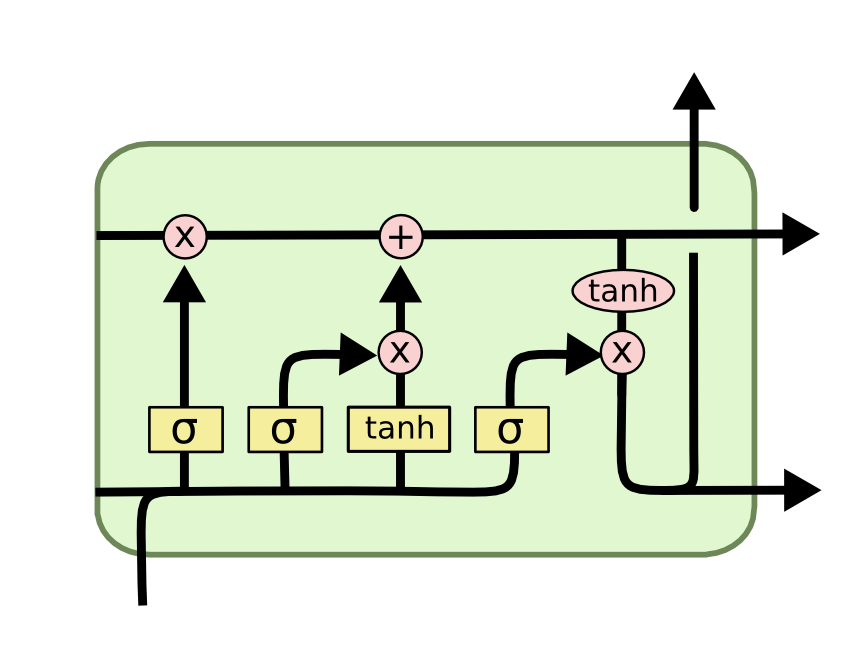

LSTM：给记忆装上"门"#
循环神经网络：让网络拥有"记忆" 揭示了 RNN 的根本矛盾：\(\mathbf{h}_t\) 必须同时承担两件互相冲突的事——记住历史和输出当前结果。一个向量，两种使命，顾此失彼。
就像一个人既要做会议记录，又要即兴发言——记录要求忠实、不遗漏，发言要求提炼、有取舍。用同一个大脑状态同时做这两件事，结果往往是两个都做不好。
关键问题：能不能把"记忆存储"和"对外输出"分开，各司其职？
历史背景#
1991年，Sepp Hochreiter 在其导师 Jürgen Schmidhuber 的指导下，首次在毕业论文中分析了 RNN 梯度消失的数学根源——这正是我们在 RNN的两个核心问题 中讨论的 \(\tanh\) 导数连乘问题。基于这一分析，他们在 1997 年正式提出了 Long Short-Term Memory (LSTM) [HS97]。
LSTM 的核心洞察至今仍是序列建模的基石：用门控机制管理信息流动。此后 20 年，LSTM 主导了语音识别、机器翻译、手写识别等几乎所有序列任务，直到 Transformer 出现。
备注
历史趣闻：LSTM 的论文最初被 NeurIPS 拒稿，审稿人认为"这个想法太复杂，而且 RNN 的问题可以通过更好的初始化解决"。如今它是 20 世纪被引用最多的深度学习论文之一。
LSTM [HS97] 的回答是：能。用两个状态，三个门。
核心洞察：从"一个状态"到"两个状态"#
RNN 只有一个隐状态 \(\mathbf{h}_t\)，它既是"当前的理解"（输出用），又是"历史的摘要"（传给下一步）。信息在每一步都被 \(\tanh\) 压缩，长此以往，细节尽失。
LSTM 把这两个职责拆开：

RNN vs LSTM：从单状态到双状态
RNN |
LSTM |
|
|---|---|---|
状态数量 |
1 个（\(\mathbf{h}_t\)） |
2 个（\(\mathbf{c}_t\) 和 \(\mathbf{h}_t\)） |
\(\mathbf{c}_t\)（细胞状态） |
无 |
长期记忆：信息的"传送带"，缓慢变化 |
\(\mathbf{h}_t\)（隐状态） |
身兼二职 |
对外输出：当前时刻的"公开发言" |
备注
细胞状态 \(\mathbf{c}_t\) 是 LSTM 的灵魂。它像一条贯穿时间的"信息传送带"——信息在上面流动时，只有少数地方会被门控修改。这与 ResNet：深层网络的突破 中残差连接的思想如出一辙：大部分信号原封不动地通过，只在必要处做修改。
四个角色：LSTM的门控系统#
有了分离的"长期记忆"（\(\mathbf{c}_t\)），自然需要一个机制来管理它——什么时候写入、什么时候擦除、什么时候读出。这个机制就是三个门（gate），外加一个候选记忆的提议。
每个门的核心公式都长这样：
\(\sigma\)（Sigmoid）把输出压到 \((0, 1)\)，天然适合做"门"——0 表示"完全关闭"，1 表示"完全打开"，中间值表示"部分开放"。
下面我们逐个认识这四个角色。
角色一：遗忘门——“档案管理员”#
遗忘门的职责
一句话：面对旧记忆 \(\mathbf{c}_{t-1}\)，决定哪些内容该丢掉。
逐步拆解遗忘门：
符号 |
含义 |
维度 |
直觉理解 |
|---|---|---|---|
\([\mathbf{h}_{t-1}, \mathbf{x}_t]\) |
拼接上一时刻的输出和当前输入 |
\(\mathbb{R}^{d+m}\) |
把"历史上下文"和"新读到的词"摆在一起 |
\(\mathbf{W}_f\) |
遗忘门的权重矩阵 |
\(\mathbb{R}^{d \times (d+m)}\) |
学到"什么样的上下文暗示该遗忘" |
\(\mathbf{b}_f\) |
遗忘门的偏置 |
\(\mathbb{R}^d\) |
通常初始化为 1（偏向"先别忘"，训练中再调整） |
\(\sigma\) |
Sigmoid 函数 |
输出 \((0, 1)^d\) |
将线性组合映射为"保留比例"：0 = 全忘，1 = 全留 |
\(\mathbf{f}_t\) |
遗忘门输出 |
\((0, 1)^d\) |
每个维度一个保留指令——\(\mathbf{c}_{t-1}\) 的第 \(i\) 维保留 \(\mathbf{f}_t^{(i)} \times 100\%\) |
备注
为什么偏置初始化为 1 而不是 0？ 在训练初期，网络还不知道该忘什么。如果遗忘门默认输出 0（全忘），梯度高速公路上全是"关闭"的闸门——信息流直接断裂，无法学习长程依赖。初始化为 1 意味着"默认全保留，需要时才忘掉"——先保证信息能流动，再逐步学会选择性遗忘。
直觉：你正在读一篇文章。读到新的段落时，你需要判断——前面提到的某个细节现在还重要吗？"遗忘门"就是用当前上下文（\(\mathbf{h}_{t-1}\) 和 \(\mathbf{x}_t\)）来判断旧记忆 \(\mathbf{c}_{t-1}\) 中每个维度的去留。比如读到"然而"这个词时（\(\mathbf{x}_t\)），你知道前面的论述可能需要被"遗忘"一部分，为新的转折腾出空间。
角色二：输入门 + 候选记忆——“采购员"和"新提案”#
输入门的职责
一句话：面对当前时刻的新信息，决定哪些内容值得写入长期记忆。
输入门的特殊之处在于它由两个组件配合完成——输入门本身（决定"在哪里写"）和候选记忆（提供"写什么内容"）：
逐步拆解输入门：
符号 |
含义 |
维度 |
直觉理解 |
|---|---|---|---|
\(\mathbf{W}_i\) |
输入门的权重矩阵 |
\(\mathbb{R}^{d \times (d+m)}\) |
学到"什么样的上下文值得记录" |
\(\mathbf{b}_i\) |
输入门的偏置 |
\(\mathbb{R}^d\) |
控制默认的"记录意愿"（通常初始化为 0） |
\(\sigma\) |
Sigmoid 函数 |
输出 \((0, 1)^d\) |
每个维度输出一个"写入许可"：0 = 不写，1 = 全写 |
\(\mathbf{i}_t\) |
输入门输出 |
\((0, 1)^d\) |
权限——对候选记忆的每个维度，允许多大比例写入 |
逐步拆解候选记忆：
符号 |
含义 |
维度 |
直觉理解 |
|---|---|---|---|
\(\mathbf{W}_c\) |
候选记忆的权重矩阵 |
\(\mathbb{R}^{d \times (d+m)}\) |
学到"如何从上下文提炼新记忆内容" |
\(\mathbf{b}_c\) |
候选记忆的偏置 |
\(\mathbb{R}^d\) |
偏置项 |
\(\tanh\) |
双曲正切函数 |
输出 \((-1, 1)^d\) |
将候选内容压缩到有界范围，防止数值发散 |
\(\tilde{\mathbf{c}}_t\) |
候选记忆 |
\((-1, 1)^d\) |
内容——基于当前上下文提出的新信息草稿 |
为什么需要两个组件配合？
备注
\(\tilde{\mathbf{c}}_t\) 像一个"提案人"，提出一份新内容的草稿（用 \(\tanh\) 压缩到 \((-1, 1)\)，类似于 LSTM 内部的"标准信息格式"）。\(\mathbf{i}_t\) 像一位"审批官"，决定这份提案的哪些部分可以进入正式记录。
为什么"产生内容"和"决定是否采纳"要分开？
你可以提出很多想法（\(\tilde{\mathbf{c}}_t\) 的各个维度都可能非零）——这是信息生成
但只采纳与当前上下文相关的部分（\(\mathbf{i}_t\) 选择性放行）——这是信息筛选
分离这两个职责，让网络学会"大胆提案，谨慎采纳"
两个激活函数的分工：
对比维度 |
Sigmoid（\(\mathbf{i}_t\)） |
\(\tanh\)（\(\tilde{\mathbf{c}}_t\)） |
|---|---|---|
输出范围 |
\((0, 1)\) |
\((-1, 1)\) |
角色 |
门控——决定"写多少" |
内容——决定"写什么" |
语义 |
天然适合做比例/概率 |
天然适合做有正有负的特征值 |
类比 |
水龙头的阀门（0=关，1=开） |
水管里的水（水本身的内容） |
角色三：输出门——“发言人”#
输出门的职责
一句话：从长期记忆 \(\mathbf{c}_t\) 中提取当前需要对外输出的内容。
逐步拆解输出门：
符号 |
含义 |
维度 |
直觉理解 |
|---|---|---|---|
\(\mathbf{W}_o\) |
输出门的权重矩阵 |
\(\mathbb{R}^{d \times (d+m)}\) |
学到"当前上下文需要输出记忆中的哪些部分" |
\(\mathbf{b}_o\) |
输出门的偏置 |
\(\mathbb{R}^d\) |
控制默认的"输出意愿" |
\(\sigma\) |
Sigmoid 函数 |
输出 \((0, 1)^d\) |
每个维度输出一个"暴露许可"：0 = 隐藏，1 = 公开 |
\(\mathbf{o}_t\) |
输出门输出 |
\((0, 1)^d\) |
决定了 \(\mathbf{c}_t\) 中哪些维度应出现在 \(\mathbf{h}_t\) 中 |
\(\mathbf{h}_t\) 的生成——两步走：
第一步：\(\tanh(\mathbf{c}_t)\)——将细胞状态压缩到 \((-1, 1)\)
这一步有两个作用：
防止输出值过大（\(\mathbf{c}_t\) 中的值理论上可以无限增长，因为遗忘门允许 \(f_t=1\) 的累积）
将记忆归一化到标准范围，方便后续层处理
第二步：\(\mathbf{o}_t \odot \tanh(\mathbf{c}_t)\)——选择性暴露
\(\mathbf{o}_t\) 像一个"发言人"，它基于当前需要（\(\mathbf{h}_{t-1}\) 和 \(\mathbf{x}_t\)）决定：记忆中的哪些部分应该体现在当前输出中。比如，当预测下一个词是动词时，输出门可能重点暴露记忆中关于"动作"的维度，而压抑关于"形容词"的维度。
备注
直觉：你拥有完整的长期记忆 \(\mathbf{c}_t\)（整本书的内容），但当别人问你"刚才讲了什么"时，你只会说出与当前问题相关的部分。这个"根据当前需要筛选发言内容"的过程，就是 \(\mathbf{o}_t\) 在做的事。
完整更新公式#
把四个角色组合在一起，LSTM 的一步更新为：
LSTM 完整公式
门控计算（所有门共享相同的输入 \([\mathbf{h}_{t-1}, \mathbf{x}_t]\)）：
状态更新：
其中 \(\odot\) 表示逐元素乘法（Hadamard 积）。
记忆更新公式详解：\(\mathbf{c}_t = \mathbf{f}_t \odot \mathbf{c}_{t-1} + \mathbf{i}_t \odot \tilde{\mathbf{c}}_t\)
项 |
含义 |
直觉 |
|---|---|---|
\(\mathbf{f}_t \odot \mathbf{c}_{t-1}\) |
遗忘门 × 旧记忆 |
保留部分——旧记忆中通过遗忘门筛选后留下的 |
\(\mathbf{i}_t \odot \tilde{\mathbf{c}}_t\) |
输入门 × 候选新信息 |
新增部分——候选信息中通过输入门批准写入的 |
\(+\) |
逐元素加法 |
新旧混编——记忆的更新是"删掉一些旧的，添加一些新的" |
读作：新记忆 = 旧记忆中保留下的 + 新信息中被批准写入的。
{kind=link}

LSTM 内部的门控结构。信息沿顶部的水平线（细胞状态 \(\mathbf{c}_t\)）流动——\(\times\) 表示门控的逐元素乘法，\(+\) 表示新旧信息的合并。图片来自 Chris Olah 的博客 “Understanding LSTM Networks”——深度学习领域最经典的可视化之一。#
备注
四类参数的规模：设隐状态维度为 \(d\)，输入维度为 \(m\)。每个门都是一个 \(\mathbb{R}^{d+m} \to \mathbb{R}^d\) 的线性映射，参数量为 \(d \times (d+m) + d\)。四个门总计 \(4d(d+m+1)\) 个参数。对于一个 \(d=256\)、\(m=128\) 的 LSTM，约为 \(4 \times 256 \times 385 \approx 394,240\) 个参数——是同等 RNN 的 4 倍，但换来了可控的长期记忆。
为什么LSTM能缓解梯度消失：梯度高速公路#
回顾 梯度消失（Vanishing Gradient） 中的分析：梯度消失的根源是 Jacobian 连乘。RNN 中，\(\frac{\partial \mathbf{h}_t}{\partial \mathbf{h}_{t-1}}\) 包含 \(\tanh\) 的导数，它始终 \(\leq 1\)，连乘后指数衰减。
LSTM 的关键差异在于细胞状态 \(\mathbf{c}_t\) 的梯度路径：
对 \(\mathbf{c}_t = \mathbf{f}_t \odot \mathbf{c}_{t-1} + \mathbf{i}_t \odot \tilde{\mathbf{c}}_t\) 求导：
核心洞察：\(\mathbf{c}_{t-1}\) 对 \(\mathbf{c}_t\) 的梯度就是遗忘门 \(\mathbf{f}_t\) 本身——没有 \(\tanh\)，没有复杂的非线性。如果 \(\mathbf{f}_t \approx 1\)（网络选择"保留"），梯度几乎无损地穿过这一时间步。
类比：传送带 vs 搅拌机
RNN：信息每步都经过 \(\tanh\) 的"搅拌"——100 步后，原始内容面目全非，梯度也一样
LSTM：信息在一条传送带（\(\mathbf{c}_t\)）上流动。遗忘门 \(\mathbf{f}_t\) 只在传送带上打开小的"丢弃口"——大部分东西原封不动地通过。梯度也沿这条传送带几乎无损地回传
这与 ResNet：深层网络的突破 中 \(\mathbf{x} + F(\mathbf{x})\) 的设计哲学完全一致：让梯度有一条不经过非线性的捷径。
对比维度 |
RNN |
LSTM |
|---|---|---|
梯度路径 |
\(\frac{\partial \mathbf{h}_t}{\partial \mathbf{h}_{t-1}}\) 包含 \(\tanh'\)，始终 \(\leq 1\) |
\(\frac{\partial \mathbf{c}_t}{\partial \mathbf{c}_{t-1}} = \mathbf{f}_t\)，可接近 1 |
100步后梯度 |
\(\approx 0.5^{100} \approx 10^{-31}\)（消失） |
若 \(\mathbf{f}_t \approx 1\)，梯度几乎不变 |
能否学到千步依赖 |
几乎不可能 |
理论上可以（实践中困难但可行） |
LSTM 仍有局限#
LSTM 解决了梯度消失，但没有解决所有问题：
仍是串行处理：\(\mathbf{h}_t\) 必须等 \(\mathbf{h}_{t-1}\) 算完。序列长度 1000 意味着 1000 次串行计算，无法并行训练
固定尺寸的瓶颈：所有历史信息必须压缩进一个固定维度的 \(\mathbf{c}_t\)。序列越长，压缩越有损——就像把一本书总结成一段话，总有信息丢失
门控也会饱和：当 \(\mathbf{f}_t\) 在训练中饱和为 0（网络学会了"这段必须忘掉"），梯度仍然会切断——只是比 RNN 更可控
备注
LSTM 的贡献不是"解决了所有问题"，而是把问题的维度降低了：从"梯度指数衰减到 0"变成"网络可以通过学习门控来调控梯度流动"。这为深度学习处理序列打开了大门——此后 20 年里，LSTM 是 NLP 领域的主力架构，直到 Transformer 出现。
代码实践：LSTM 的梯度保持能力#
import torch
import torch.nn as nn
# RNN: 参数量 = W_h(64×64) + W_x(64×32) + b(64) + W_y(64×32) = 8,256
rnn = nn.RNN(input_size=32, hidden_size=64, num_layers=1)
# LSTM: 四个门，每个门 = W(64×96) + b(64) = 6,208
# 四个门总计 = 24,832（约RNN的3倍）
# 外加输出投影权重不计入（PyTorch默认不自动回归输出）
lstm = nn.LSTM(input_size=32, hidden_size=64, num_layers=1)
# 长序列测试——100步，梯度必须穿越100次门控操作
x = torch.randn(100, 1, 32) # (seq_len=100, batch=1, features=32)
# RNN前向——隐状态 h_t 每一步经过 {ref}`lstm-gradient-highway` 中描述的 tanh 压缩
rnn_out, _ = rnn(x) # rnn_out: (100, 1, 64)
rnn_out[-1].sum().backward() # 只对最后一步求梯度
# 查看输入权重的梯度范数——由于梯度消失（{ref}`gradient-vanishing`），接近0
print(f"RNN W_ih grad norm: {rnn.weight_ih_l0.grad.norm():.10f}")
# LSTM前向——输出 (output, (h_n, c_n))
# output: (100, 1, 64) ——每一步的隐状态（对外输出）
# h_n: ( 1, 1, 64) ——最后一步的隐状态
# c_n: ( 1, 1, 64) ——最后一步的细胞状态（长期记忆）
lstm_out, (h_n, c_n) = lstm(x)
lstm_out[-1].sum().backward()
# LSTM的输入权重梯度显著更大——遗忘门 f_t 为梯度保留了通路（{ref}`lstm-gradient-highway`）
print(f"LSTM W_ih grad norm: {lstm.weight_ih_l0.grad.norm():.10f}")
# 典型输出：LSTM的梯度范数比RNN大2-3个数量级
本节小结
LSTM 的核心洞察：把"记忆存储"（\(\mathbf{c}_t\)）和"对外输出"（\(\mathbf{h}_t\)）分离
三个门各司其职：遗忘门（擦除）、输入门（写入）、输出门（读取）
细胞状态 \(\mathbf{c}_t\) 的梯度路径几乎不经过非线性——这是缓解梯度消失的关键
LSTM 缓解了梯度消失，但串行处理和固定状态尺寸的根本限制仍在——这是下一跳的起点
掌握了 LSTM 如何用门控机制"管理记忆"后，我们面临一个更深层的问题：即使有了门控，信息还是要一步步传递——\(\mathbf{h}_1\) 到 \(\mathbf{h}_{100}\) 必须经过 99 步。下一节 从RNN到注意力：一个思想的跳跃 中，我们将看到一种彻底颠覆的思路：为什么不让第 100 步直接看到第 1 步？
参考文献#
贡献者与修订历史
查看详细修订记录
-
8eb32752026-05-09 - Heyan Zhu: feat(sequence-modeling): add new chapter on sequence modeling from RNN to Mamba